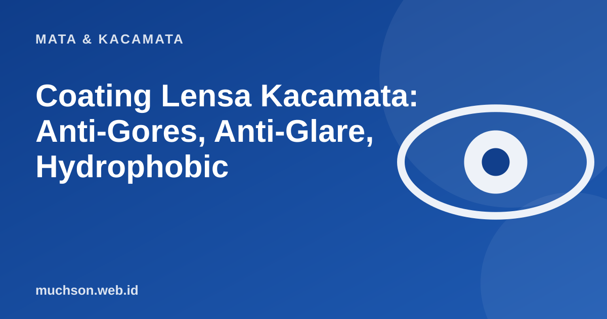

Beranda › Artikel › Mata & Kacamata
Mata & KacamataCoating Lensa Kacamata: Anti-Gores, Anti-Glare, Hydrophobic
Dua lensa dengan resep yang sama bisa berbeda harga karena lapisan di permukaannya. Sebagian lapisan berguna sehari-hari, sebagian hanya pemanis. Mari kenali satu per satu.

Lapisan yang umum
Mana yang sebaiknya dipilih?
| Kebutuhan | Lapisan yang paling bermanfaat |
|---|---|
| Kerja di depan layar, menyetir malam | Anti-pantul |
| Anak-anak, aktivitas aktif | Anti-gores dan lensa polikarbonat (lebih tahan benturan) |
| Sering berkeringat, berminyak, hujan | Hydrophobic / oleophobic |
| Sering di luar ruangan | Anti-UV (pastikan ada) |
Peringatan
Lapisan yang bagus tidak menggantikan cara membersihkan yang benar. Mengelap lensa kering dengan baju atau tisu justru menimbulkan goresan.
Tanya jawab
Apakah semua lensa sudah ada coating?
Tidak selalu. Lensa standar biasanya hanya punya lapisan keras dasar. Anti-pantul dan hydrophobic sering opsional atau tersedia di paket tertentu.
Mengapa lensa anti-pantul tampak berpendar hijau atau ungu?
Itu pantulan sisa dari lapisan antipantul dan normal. Warna dan intensitas berbeda antar produk.
Bagaimana merawat lensa dengan coating?
Bilas dengan air, bersihkan dengan cairan khusus lensa dan lap microfiber. Hindari tisu kasar, baju, dan alkohol pekat.